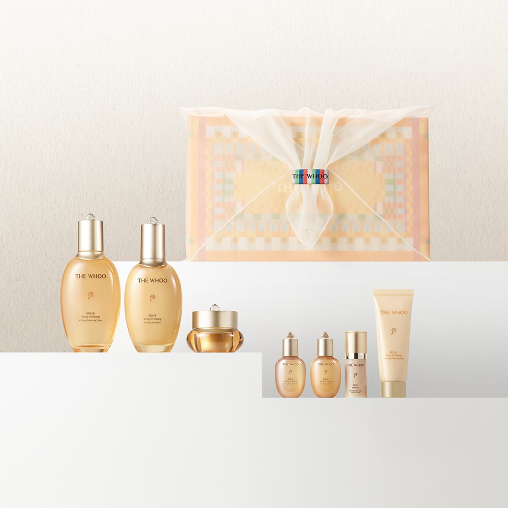
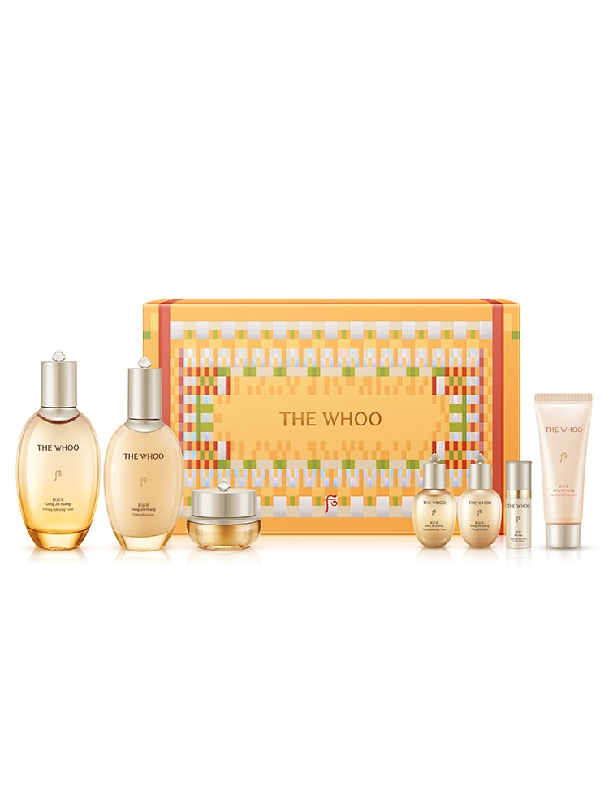
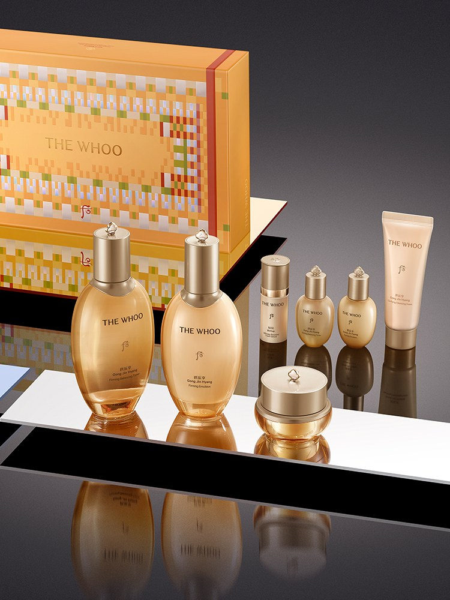

The Whoo Gongjinhyang Review at a Glance
This The Whoo Gongjinhyang review unboxes the Royal 3-Piece Set, one of Korea's favorite luxury skincare gifts. The History of Whoo (더후) is LG Household & Health Care's luxury brand, inspired by Korean royal-court beauty. Gongjinhyang (공진향) is its core line, known for its gold bottles.
The set we checked has a full-size toner (170ml) and emulsion (130ml), plus a 20ml cream, a 10ml essence and a 40ml cleansing foam. It's all wrapped in a colorful dancheong-pattern bojagi, a traditional Korean wrapping cloth.

The Whoo says the line is built on Gong Jin Solution™, an herbal complex based on research into Gongjindan, a traditional royal prescription. The brand pitches it for elasticity care. That's the brand's claim, not our test result.
What's in the Box
| Item | Details |
|---|---|
| Brand | The History of Whoo (더후) · LG Household & Health Care, Korea |
| Line | Gongjinhyang (공진향) |
| Toner | 170ml |
| Emulsion | 130ml |
| Cream | 20ml |
| Essence | 10ml |
| Cleansing Foam | 40ml |
| Wrapping | Dancheong-pattern bojagi gift wrap |
| Signature Complex | Gong Jin Solution™ (brand information) |
Ingredient lists published for Gongjinhyang toners and emulsions include herbal extracts such as ginseng, angelica root and cornus fruit, plus fragrance. Editions differ, so check the full list on your box.


Photo note: There are only 3 real product photos for this set, so this review uses 3 (not 5). We didn't add any AI-generated images.
How to Use the Gongjinhyang Routine
- Cleansing foam: Lather with water, wash gently and rinse.
- Toner: Pat a little over your face with your palms.
- Essence: Smooth on a small amount.
- Emulsion: Spread evenly and press in with your palms.
- Cream: Finish with a thin layer, especially at night.
Pros & Cons
✅ Pros
- A full basic routine in one box.
- The large toner and emulsion are the parts you'll use most.
- The bojagi wrapping makes it gift-ready.
- The gold bottles look luxurious on a vanity.
⚠️ Cons
- The cream, essence and foam are small sizes.
- The elasticity benefits are brand claims, and the published formulas include fragrance.
- Contents change with seasonal editions, and US listings may sell a different one.
Who It Suits (and Who Should Skip It)
- Great for: Gifts for parents, holidays and thank-yous.
- Great for: Anyone who enjoys a classic, richer toner-plus-emulsion routine.
- Maybe skip: If you avoid fragrance or prefer a minimal, lightweight routine.
The Whoo Gongjinhyang FAQ
What comes in The Whoo Gongjinhyang Royal 3-Piece Set?
The Korean listing we reviewed has a 170ml toner, a 130ml emulsion, a 20ml cream, a 10ml essence and a 40ml cleansing foam. It comes in a dancheong-pattern bojagi gift wrap.
What order do I use the products in?
Cleansing foam, then toner, essence, emulsion and cream. Use a small amount of each and pat it in.
What is Gong Jin Solution?
It's The Whoo's herbal complex, which the brand says was developed from research on Gongjindan, a traditional royal herbal prescription. Its elasticity benefits are a brand claim.
Is it a good gift?
In Korea it's a classic gift for parents and holidays because it arrives already wrapped in a traditional bojagi cloth. Overseas editions and wrapping may differ.
The Whoo Gongjinhyang Royal Set
Toner · Emulsion · Cream · Essence · Cleansing Foam